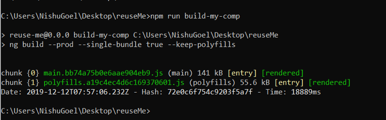
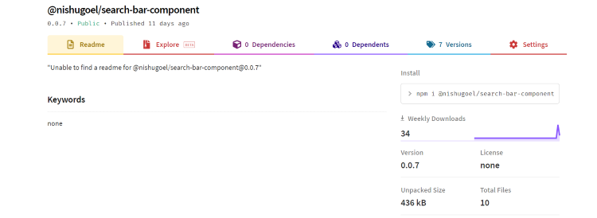

<div class="content-overview">
    <div class="inner-style">
        <h2 class="content-heading"><span class="style-scope ">8</span>. <span
                class="style-scope google-codelab-step">Publish to npm</span></h2>
        <p>For this activity, I will be publishing this login form to the npm registry and using it in a React project.
            After building the web component using npm run build-my-comp , you get a single bundle generated for your
            web component, looking like this:</p>
        <div style="text-align: center; ">
        </div>

        <p>You can now publish it to npm by creating a package.json file in the dist directory. This needs only the name
            and version of the package that you will be publishing. To avoid the deletion of package.json every time you
            build the component, you can place it inside another folder.</p>
        <p>The package.json looks like:
        </p>
        <pre style="background: darkgray; padding: 6px;"><code style=" color: black;">{{'{'}}
    "name" : "@nishugoel/prod-card",
    "version": "0.0.5"
{{'}'}}
</code></pre>
        <p>We can now cd into the built package and pack it into a package to be published to npm using npm pack . This
            will generate .tgzfile for you. To publish it to npm, make sure you are logged in to npm, if not, use npm
            login.</p>
        <p>Finally publish using,
        </p>
        <pre
            style="background: darkgray; padding: 6px;"><code style=" color: black;">npm publish packagedfile.tgz --access public</code></pre>
        <p>Our web component is finally on npm and can be used in other frameworks now :)</p>
        <div style="">
        </div>
    </div>
</div>